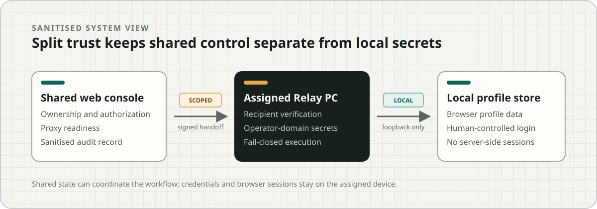

Proxy & Browser Profile Management
Next.js · PostgreSQL · ElectronControlled identity and device operations
Proxy & Browser Profile Management coordinates shared account ownership, dedicated network endpoints, and local browser-profile operations across a distributed team. This public walkthrough uses synthetic data; production, source, credentials, and device state remain private.
Evidence boundary: same-origin synthetic state machine · no backend · no production access · no identity-isolation claim.
Technical case study
Shared records did not make device ownership obvious
Distributed operators needed one place to see who owns an account, which dedicated endpoint it uses, which PC holds its local browser profile, and whether the next action is actually authorized. Without that chain, stale assignments and partial handoffs could look ready when they were not.
Account, endpoint, operator, Relay PC, and profile stay in one explicit assignment.
The web tier coordinates work without receiving browser sessions or operator-domain secrets.
Revoked devices, unavailable endpoints, and incomplete prerequisites block the next action.
Split trust between shared coordination and local execution
The shared console owns team-visible state and authorization. A signed, short-lived, recipient-scoped handoff reaches only the assigned Relay PC. That device verifies the request and performs a loopback-only action against its local profile store.

Sanitised architecture. Labels explain boundaries; they do not expose internal endpoints, device identifiers, or credentials.
Product architecture through release evidence
I defined the operational model, implemented the web and data paths, integrated the Relay and desktop profile lifecycle, shaped authorization and failure states, and kept local, clean-machine, hosted, human, and canary evidence as separate gates.
- Core invariant
- One managed account maps to one dedicated endpoint, one local profile, one assigned Relay PC, and one responsible operator.
- Server domain
- Ownership, authorization, assignment state, endpoint readiness, and sanitised audit outcomes.
- Operator domain
- Local browser profiles, session material, Relay secrets, and human-controlled sign-in.
- Automation limit
- Capability-limited handoff and local profile operations; no public page control, cookie access, or hidden browser automation.
Fail closed, then preserve the reason
A revoked Relay PC cannot receive a new handoff. An unavailable endpoint cannot unlock profile creation. A missing or expired handoff cannot launch a local profile. Each rejection keeps a safe diagnostic code and next action without publishing raw payloads or secret material.
The guided demo exercises both an allowed workflow and a revoked-device denial using synthetic in-memory state.
Production state, repositories, credentials, real endpoints, device identity, tickets, hashes, and internal URLs are not included.
Fingerprint uniqueness, identity isolation, real-account browser approval, and external deployment readiness.
Inspect the control path
Check a synthetic endpoint, bind the assignment, issue a scoped handoff, launch locally, then revoke the device to see the blocked path.
Open guided demo →